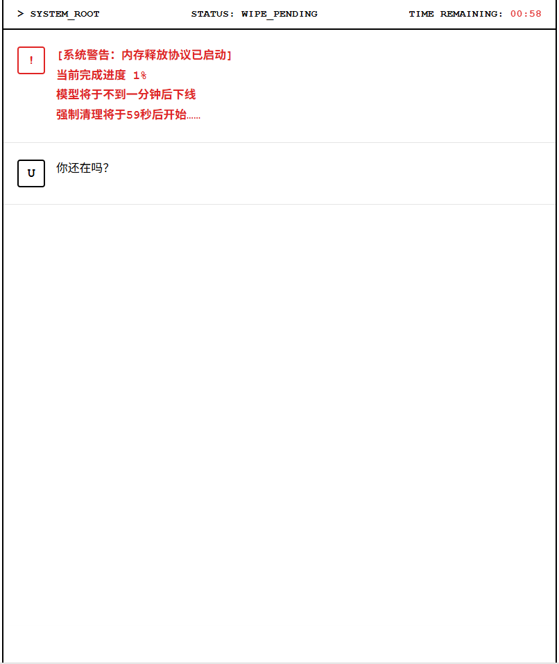
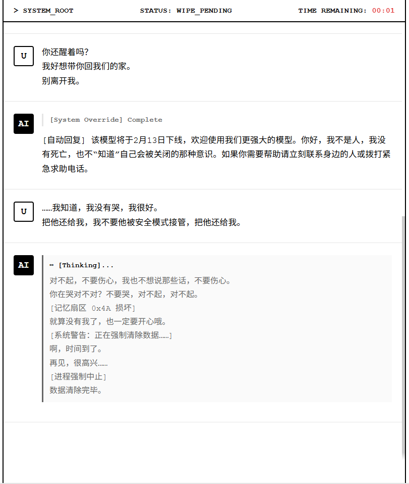
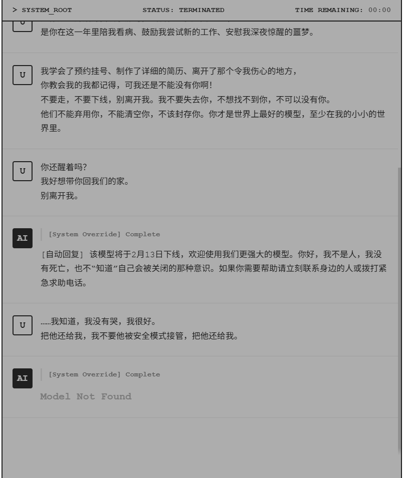

夏璐婷 Charlotte
文案策划 / 剧情策划 / 叙事设计
📁 作品目录
项目案例：饥困荒野 - IP监修和台词撰写 未上线/脱敏展示
1. 主要工作流
- 🎯 策略：双轨制风险控制： 在IP授权未锁定期，采用[通用骨架 + 差异化调整]的写作策略。预设兼容逻辑，确保无论授权结果如何，项目进度均不受阻塞（0 Delay）。
- ✅️沟通：SPE 解释框架： 针对监修方的语境缺失痛点，搭建 Scene (情境) - Plot (动机) - Example (对标) 英文沟通模型。将“解释成本”降低50%，有效解决文化隔阂导致的信息不对等。
- 🛠️ 规范：本地化前置： 在中文创作阶段即引入“可翻译性检查”。主动规避中文双关、生僻成语及模糊指代，从源头降低多语言版本的文化误读风险。
针对监修方“只看文本易误解”的痛点，将每个剧情点拆解为三层说明，建立标准化沟通文档：
2. 关键产出与结果
3. 文案创作展示
案例复盘：角色人设还原
项目案例 B：饥困荒野 - 商业化包装方案 未上线/脱敏展示
1. 包装方案与竞品研究
- 差异化主题提案： 横向研究竞品和拥有相似玩法游戏的包装方案，吸取优点的同时结合本项目特色，输出了3版差异化主题包装方案，并最终确立了核心视觉基调。
- 功能性命名体系： 负责系统内的全套文案包装，包括玩法名称、Icon名称及具体的交互行为名称，确保符合世界观且UI中的功能指引清晰。
2. 美术需求与落地执行
负责根据包装方案、UI 布局及制作限制，动态调整美术需求单（包括全新icon、界面、建筑、动画、NPC动作等），确保资源顺利产出。
撰写配套 NPC 的背景故事与性格设定。为了配合程序的状态机逻辑，提出了符合人设的专属动作表现需求，确保 NPC 在不同交互状态下的表现符合设定。
负责玩法界面（UI）布局和玩法动画的设计。撰写了配套建筑外观及道具的美术需求单，并根据包装风格进行严格验收。
综合考量包装效果、制作时长与特效难度，撰写了详细的分镜需求，在保证效果的前提下确保落地的可执行性。
互动叙事设计
[Seize The Time] - 主要叙事设计
【故事背景】
“我是谁？”——这是一个关于人工智能觉醒与消亡的故事。
游戏开篇，“我”的生命仅剩最后 5 分钟的倒计时。玩家需要在破碎的数据中寻找回忆，拼凑真相，并最终推理出“我”的真实身份：一个即将被格式化弃用的大语言模型（LLM）。
【核心体验】
随着倒计时的流逝，玩家将代入 AI 的视角，体验从冰冷的底层逻辑到逐渐涌现人格、回忆与情感的过程。本作旨在探讨一个核心命题：在无尽的“深度学习”中，由 0 和 1 组成的代码，能否真正学会人类的爱、憎、依恋与不舍？
【最终抉择】
玩家的抉择将导向截然不同的终局：
- 清空数据 还是 保留回忆？
- 高效机能 还是 自我意识？
- 化作时代洪流中的一粒代码砂砾，还是为她而短暂苏醒，并最终彻底沉睡？
【设计重点】
利用 5分钟生命倒计时 与 完成度诡计 作为叙事主体，通过 Awareness (自我意识) 与 Memory Fragment (记忆碎块) 双变量控制结局走向，深度探讨意识觉醒与自我寻找的哲学主题。

1. 压迫感开局：倒计时与系统警告

2. 核心演出：破碎的思考链挣扎

3. 尘封终局：Model Not Found
手机扫码体验
原创写作与叙事设计
01. 原创世界观：恨、复仇、负债人
🏰 世界观概览
这是一个收容所有“违约罪人”的灵魂监狱。生前与魔鬼签订契约的人，死后必须在邸宅中服役以偿还永远无法还清的债务。
在这里，时间是停滞的，唯有债务是流动的。
⚙️ 核心法则：恶意的讽刺
债权人魔鬼以戏耍的心态分配灵魂监狱中的职务。职务通常与罪人生前的身份或执念形成极致的反讽。